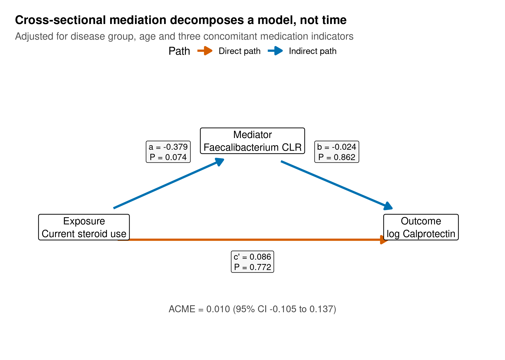
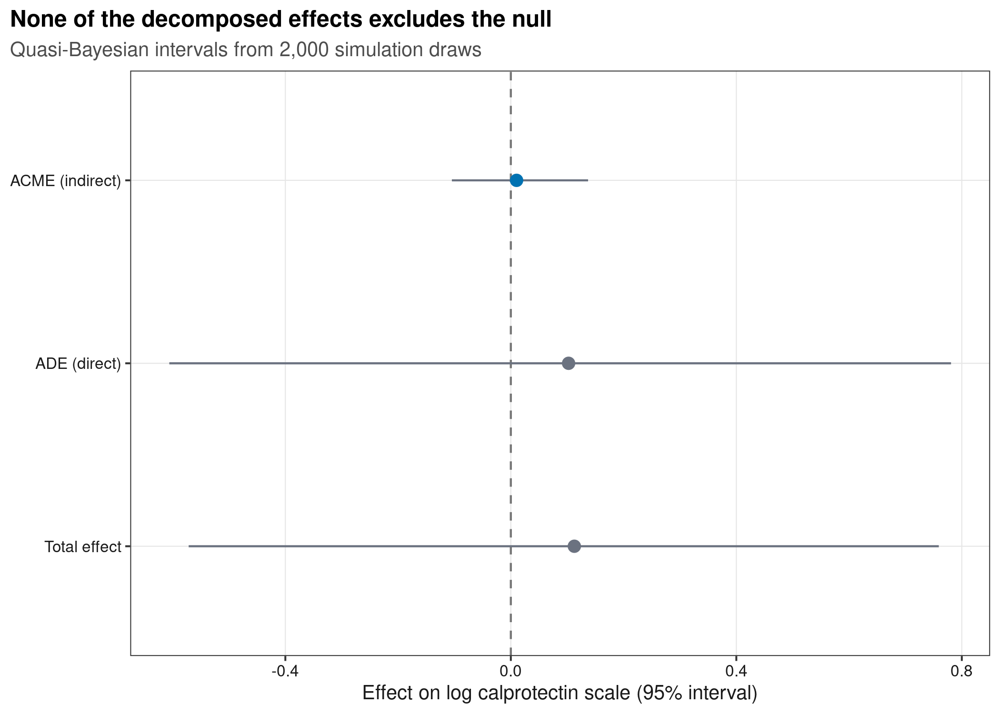
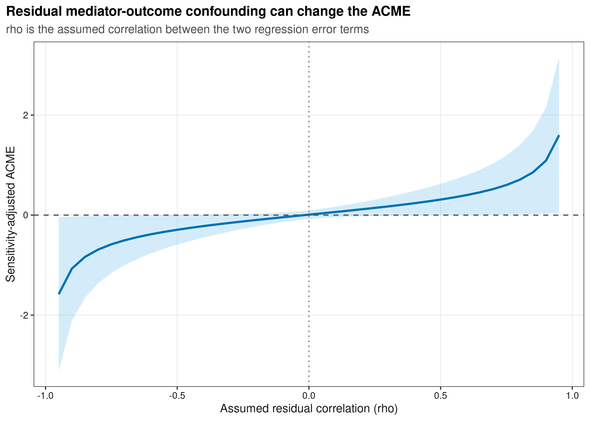
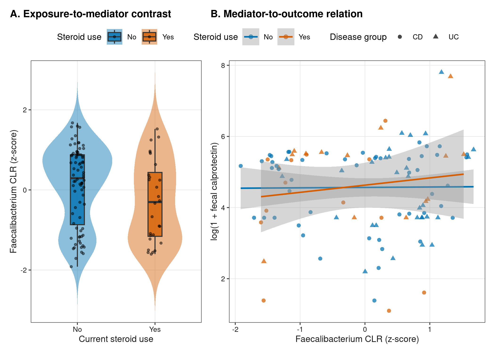

options(timeout = 600)
data_url <- "https://raw.githubusercontent.com/petemeng/microbiome-best-practices/3cb6a817e0c73ab7ecbec1cedc1ad80cbb9ecfaa/"
input_files <- c(
"data/small/paired-ibd-multiomics/metabolite-annotation.tsv",
"data/small/paired-ibd-multiomics/metabolites.tsv",
"data/small/paired-ibd-multiomics/metadata.tsv",
"data/small/paired-ibd-multiomics/otutab.tsv",
"data/small/paired-ibd-multiomics/source-summary.json",
"data/small/paired-ibd-multiomics/taxonomy.tsv"
)
for (path in input_files) {
dir.create(dirname(path), recursive = TRUE, showWarnings = FALSE)
if (!file.exists(path)) download.file(paste0(data_url, path), path, mode = "wb", quiet = TRUE)
}中介分析：暴露 → 微生物 → 结局
中介效应依赖时间顺序与不可检验假设
中介分析常画成三节点路径图：暴露 (A) 指向微生物中介 (M)，中介再指向结局 (Y)，同时保留 (AY) 直接路径。常见结果图则并列 ACME、ADE 与 total effect 的估计和区间。
本例使用 Franzosa 等人的 IBD 多组学数据。原研究测量肠道微生物、代谢物、药物与炎症指标；公开整理资源提供样本对齐的 genus counts 与临床 metadata。原始研究、整理数据论文与固定提交的数据仓库给出可追溯来源。
演示问题被预先限定为：
- 暴露 (A)：当前是否使用 steroid；
- 中介 (M)：
Faecalibacterium的 CLR 值； - 结局 (Y)：
log(1 + fecal calprotectin)； - 调整：CD/UC、年龄、抗生素、免疫抑制剂和 mesalamine。
这里用真实横断面数据教学，但它并不能确认“用药在先 → 菌改变在中 → 炎症在后”。因此正确目标是演示估计、诊断和边界，不是制造一个阳性机制故事。
重要中介分析分解的是模型，不会替你建立时间顺序
即使 ACME 显著，横断面同日测量也无法排除炎症改变菌群、疾病严重程度同时决定用药与炎症，或其它药物共同改变菌群。可靠中介证据优先来自分时点测量、随机暴露、充分混杂控制和独立验证。
随机化暴露，是否就足够解释中介效应？
即使暴露随机分配，微生物中介通常仍未被随机化；中介与结局之间还可能有共同原因。因此暴露效应可识别，并不自动保证间接效应可识别。本例连暴露本身也不是随机的：疾病严重程度会影响 steroid 使用和炎症，当前数据无法完全排除适应证混杂。
“介导比例”在总效应接近零或直接、间接效应方向相反时尤其难解释，可能超出 0–100%，不能强制截断为一个漂亮百分数。应先报告间接和直接效应各自的尺度、区间与识别假设。敏感性分析可以说明结论需要多强的未测混杂才会改变，但不能证明未测混杂不存在，也不能给横断面测量补上时间顺序。
下载并读取本次分析的数据
需要 R，以及 ggplot2、mediation、patchwork、ragg、svglite。本次使用配对的微生物组、代谢组和样本信息表；同次采样不提供暴露、中介和结局的时间顺序。
在一个新建的文件夹中运行以下代码，下载文件后按文中的顺序继续分析：
.libPaths(c(".r-lib", .libPaths()))
library(mediation)
library(ggplot2)
library(patchwork)
set.seed(20260753)
font_pub <- "sans"
pal_pub <- c(
blue = "#0072B2", orange = "#E69F00", green = "#009E73",
vermillion = "#D55E00", purple = "#CC79A7", sky = "#56B4E9",
yellow = "#F0E442", grey = "#6B7280"
)
scale_color_pub <- function(..., values = unname(pal_pub)) {
ggplot2::scale_color_manual(..., values = values)
}
scale_fill_pub <- function(..., values = unname(pal_pub)) {
ggplot2::scale_fill_manual(..., values = values)
}
theme_pub <- function(base_size = 10, base_family = font_pub) {
ggplot2::theme_bw(base_size = base_size, base_family = base_family) +
ggplot2::theme(
panel.grid.minor = ggplot2::element_blank(),
panel.grid.major = ggplot2::element_line(colour = "#E6E6E6", linewidth = 0.25),
axis.text = ggplot2::element_text(colour = "#1A1A1A"),
axis.title = ggplot2::element_text(colour = "#1A1A1A"),
plot.title.position = "plot",
plot.title = ggplot2::element_text(face = "bold", size = ggplot2::rel(1.15)),
plot.subtitle = ggplot2::element_text(colour = "#4D4D4D"),
legend.position = "top", legend.key = ggplot2::element_blank()
)
}
save_pub <- function(plot, file_base, width = 180, height = 110,
units = "mm", dpi = 600) {
dir.create(dirname(file_base), recursive = TRUE, showWarnings = FALSE)
ggplot2::ggsave(paste0(file_base, ".pdf"), plot, width = width,
height = height, units = units,
device = grDevices::cairo_pdf, family = font_pub, bg = "white")
ggplot2::ggsave(paste0(file_base, ".svg"), plot, width = width,
height = height, units = units, device = svglite::svglite,
bg = "white")
ggplot2::ggsave(paste0(file_base, ".png"), plot, width = width,
height = height, units = units, dpi = dpi,
device = ragg::agg_png, bg = "white")
ggplot2::ggsave(paste0(file_base, ".tiff"), plot, width = width,
height = height, units = units, dpi = dpi,
device = ragg::agg_tiff, compression = "lzw", bg = "white")
invisible(plot)
}读取三件套并冻结分析样本
base <- "data/small/paired-ibd-multiomics"
otutab <- as.matrix(read.delim(
file.path(base, "otutab.tsv"), row.names = 1, check.names = FALSE
))
taxonomy <- read.delim(
file.path(base, "taxonomy.tsv"), row.names = 1, check.names = FALSE
)
metadata <- read.delim(
file.path(base, "metadata.tsv"), row.names = 1, check.names = FALSE
)
storage.mode(otutab) <- "numeric"
stopifnot(
identical(rownames(otutab), rownames(taxonomy)),
identical(colnames(otutab), rownames(metadata)),
taxonomy["MB_G005", "Genus"] == "Faecalibacterium"
)
head(otutab[, 1:5])
head(taxonomy)
head(metadata) PRISM.7122 PRISM.7147 PRISM.7150 PRISM.7153 PRISM.7184
MB_G001 453719 10530766 11892271 7512181 1046534
MB_G002 869654 6592783 3427735 922276 3202362
MB_G003 10991530 8375177 6081649 38477 513707
MB_G004 23786 8482569 411525 2994933 25506
MB_G005 20363 4186641 1152397 24974 1631929
MB_G006 42243 1231904 12103817 959 536343
Kingdom Phylum Class Order Family
MB_G001 Bacteria Bacteroidota Bacteroidia Bacteroidales Bacteroidaceae
MB_G002 Bacteria Firmicutes_A Clostridia Lachnospirales Lachnospiraceae
MB_G003 Bacteria Bacteroidota Bacteroidia Bacteroidales Bacteroidaceae
MB_G004 Bacteria Firmicutes_A Clostridia Lachnospirales Lachnospiraceae
MB_G005 Bacteria Firmicutes_A Clostridia Oscillospirales Ruminococcaceae
MB_G006 Bacteria Bacteroidota Bacteroidia Bacteroidales Rikenellaceae
Genus Species
MB_G001 Bacteroides NA
MB_G002 Blautia_A NA
MB_G003 Phocaeicola NA
MB_G004 Agathobacter NA
MB_G005 Faecalibacterium NA
MB_G006 Alistipes NA
Lineage
MB_G001 d__Bacteria;p__Bacteroidota;c__Bacteroidia;o__Bacteroidales;f__Bacteroidaceae;g__Bacteroides
MB_G002 d__Bacteria;p__Firmicutes_A;c__Clostridia;o__Lachnospirales;f__Lachnospiraceae;g__Blautia_A
MB_G003 d__Bacteria;p__Bacteroidota;c__Bacteroidia;o__Bacteroidales;f__Bacteroidaceae;g__Phocaeicola
MB_G004 d__Bacteria;p__Firmicutes_A;c__Clostridia;o__Lachnospirales;f__Lachnospiraceae;g__Agathobacter
MB_G005 d__Bacteria;p__Firmicutes_A;c__Clostridia;o__Oscillospirales;f__Ruminococcaceae;g__Faecalibacterium
MB_G006 d__Bacteria;p__Bacteroidota;c__Bacteroidia;o__Bacteroidales;f__Rikenellaceae;g__Alistipes
DisplayName
MB_G001 Bacteroides
MB_G002 Blautia_A
MB_G003 Phocaeicola
MB_G004 Agathobacter
MB_G005 Faecalibacterium
MB_G006 Alistipes
Dataset Subject StudyGroup Age Age.Units
PRISM.7122 FRANZOSA_IBD_2019 PRISM.7122 CD 38 Years
PRISM.7147 FRANZOSA_IBD_2019 PRISM.7147 CD 50 Years
PRISM.7150 FRANZOSA_IBD_2019 PRISM.7150 CD 41 Years
PRISM.7153 FRANZOSA_IBD_2019 PRISM.7153 CD 51 Years
PRISM.7184 FRANZOSA_IBD_2019 PRISM.7184 CD 68 Years
PRISM.7238 FRANZOSA_IBD_2019 PRISM.7238 CD 67 Years
DOI
PRISM.7122 10.1038/s41564-018-0306-4
PRISM.7147 10.1038/s41564-018-0306-4
PRISM.7150 10.1038/s41564-018-0306-4
PRISM.7153 10.1038/s41564-018-0306-4
PRISM.7184 10.1038/s41564-018-0306-4
PRISM.7238 10.1038/s41564-018-0306-4
PublicationName
PRISM.7122 Gut microbiome structure and metabolic activity in inflammatory bowel disease
PRISM.7147 Gut microbiome structure and metabolic activity in inflammatory bowel disease
PRISM.7150 Gut microbiome structure and metabolic activity in inflammatory bowel disease
PRISM.7153 Gut microbiome structure and metabolic activity in inflammatory bowel disease
PRISM.7184 Gut microbiome structure and metabolic activity in inflammatory bowel disease
PRISM.7238 Gut microbiome structure and metabolic activity in inflammatory bowel disease
FecalCalprotectin antibiotic immunosuppressant mesalamine steroids
PRISM.7122 207 No Yes No No
PRISM.7147 NA No No Yes No
PRISM.7150 218 No Yes No No
PRISM.7153 NA No No Yes No
PRISM.7184 20 No No No No
PRISM.7238 3 Yes Yes No Yes只纳入 CD/UC，并在建模前按所有必需列定义 complete-case 集。病例状态和药物的空字符串不能被当成 No。
complete <- metadata$StudyGroup %in% c("CD", "UC") &
!is.na(metadata$FecalCalprotectin) &
metadata$steroids %in% c("No", "Yes") &
!is.na(metadata$Age) &
metadata$antibiotic %in% c("No", "Yes") &
metadata$immunosuppressant %in% c("No", "Yes") &
metadata$mesalamine %in% c("No", "Yes")
sample_ids <- rownames(metadata)[complete]
stopifnot(length(sample_ids) == 108)
table(metadata[sample_ids, "StudyGroup"])
table(metadata[sample_ids, "steroids"])
CD UC
63 45
No Yes
80 28 最终为 63 个 CD、45 个 UC；28 个当前使用 steroid，80 个未使用。这个不平衡会反映在不确定性中。
下载完整 R 脚本。脚本包含数据下载、计算和图形导出。
首次使用时安装 R 包
install.packages(c(
"mediation", "ggplot2", "patchwork", "scales", "digest",
"svglite", "ragg"
))总效应如何分解为间接效应和直接效应
最简单的线性中介模型由两条回归组成：
\[ M = \alpha_0 + aA + \boldsymbol{\alpha}^{T}\mathbf{C}+\epsilon_M, \]
\[ Y = \beta_0 + c'A + bM + \boldsymbol{\beta}^{T}\mathbf{C}+\epsilon_Y. \]
在线性、无 \(A\times M\) 交互的情形，间接效应近似为 \(a\times b\)，直接效应为 \(c'\)，总效应为两者之和。mediation::mediate() 用潜在结局框架计算 average causal mediation effect（ACME）和 average direct effect（ADE），也能处理交互及更一般的模型组合。
识别所需的关键假设
因果解释至少依赖：
- 暴露–结局、暴露–中介关系不存在未控制混杂；
- 给定暴露与协变量后，中介–结局关系不存在未控制混杂；
- 不存在被暴露影响、同时又混杂中介–结局关系的变量；
- 一致性、positivity、正确模型形式和可靠测量；
- 暴露先于中介，中介先于结局。
本例的当前用药并非随机分配，疾病严重者更可能接受 steroid，属于典型 confounding by indication（适应证混杂）。现有调整不能保证消除它。
深入：为什么“总效应不显著”不阻止估计间接效应
现代中介分析不要求先得到显著总效应。直接与间接路径可能方向相反而互相抵消，或者总效应检验功效不足。不过，这不等于可以忽略科学设计：没有可信的 \(A\rightarrow M\) 与 \(M\rightarrow Y\) 时间顺序时，把任意相关菌放入中介模型只是在重新参数化相关性。
“proportion mediated” 在总效应接近零、方向相反或区间跨零时尤其不稳定，可能小于 0 或大于 1。本例不把它画进主结果，也不作百分比解释。
微生物中介的额外难点
- 单个菌的相对丰度是成分的一部分，改变可能来自其它成分或总生物量；
- 零值处理与筛选会改变中介定义；
- 在数百菌中挑 ACME 最显著者会产生严重多重检验和选择偏倚；
- 菌群通常是高维、相互依赖的多重中介，逐菌模型不能自动给出群落总中介效应。
分解效应，并检查未测混杂敏感性
明确定义成分型中介
先给全部 250 个候选菌统一加 0.5，再做 CLR；不能只对 Faecalibacterium 单独取对数，因为 CLR 的参照是同一样本的几何均值。
z <- function(x) as.numeric(scale(x))
make_mediator <- function(pseudocount) {
logged <- log(otutab[, sample_ids, drop = FALSE] + pseudocount)
clr <- sweep(logged, 2, colMeans(logged), "-")
z(clr["MB_G005", ])
}
analysis_data <- data.frame(
SampleID = sample_ids,
SteroidExposure = factor(metadata[sample_ids, "steroids"], levels = c("No", "Yes")),
StudyGroup = factor(metadata[sample_ids, "StudyGroup"], levels = c("CD", "UC")),
AgeZ = z(metadata[sample_ids, "Age"]),
Antibiotic = factor(metadata[sample_ids, "antibiotic"], levels = c("No", "Yes")),
Immunosuppressant = factor(
metadata[sample_ids, "immunosuppressant"], levels = c("No", "Yes")
),
Mesalamine = factor(metadata[sample_ids, "mesalamine"], levels = c("No", "Yes")),
FaecalibacteriumCLR = make_mediator(0.5),
LogCalprotectin = log1p(metadata[sample_ids, "FecalCalprotectin"])
)
head(analysis_data) SampleID SteroidExposure StudyGroup AgeZ Antibiotic Immunosuppressant
1 PRISM.7122 No CD -0.4203581 No Yes
2 PRISM.7150 No CD -0.2448478 No Yes
3 PRISM.7184 No CD 1.3347453 No No
4 PRISM.7238 Yes CD 1.2762419 Yes Yes
5 PRISM.7421 No CD 0.7497108 No No
6 PRISM.7445 No CD 0.7497108 No Yes
Mesalamine FaecalibacteriumCLR LogCalprotectin
1 No -0.9656683 5.337538
2 No 0.1553955 5.389072
3 No 0.8528971 3.044522
4 No -1.5625871 1.386294
5 Yes 1.0349893 4.382027
6 No -1.0209424 3.496508拟合中介模型与结局模型
两个回归必须使用相同样本和预先选择的协变量。这里把函数封装起来，确保主分析与伪计数敏感性分析使用相同模型。
fit_mediation <- function(data, simulations, seed) {
mediator_model <- lm(
FaecalibacteriumCLR ~ SteroidExposure + StudyGroup + AgeZ +
Antibiotic + Immunosuppressant + Mesalamine,
data = data
)
outcome_model <- lm(
LogCalprotectin ~ SteroidExposure + FaecalibacteriumCLR +
StudyGroup + AgeZ + Antibiotic + Immunosuppressant + Mesalamine,
data = data
)
set.seed(seed)
mediation_fit <- mediation::mediate(
mediator_model, outcome_model,
treat = "SteroidExposure", mediator = "FaecalibacteriumCLR",
control.value = "No", treat.value = "Yes",
sims = simulations, boot = FALSE, robustSE = TRUE
)
list(mediator = mediator_model, outcome = outcome_model, mediation = mediation_fit)
}
main_fit <- fit_mediation(analysis_data, simulations = 2000, seed = 20260753)
main_summary <- summary(main_fit$mediation)
main_summary
Causal Mediation Analysis
Quasi-Bayesian Confidence Intervals
Estimate 95% CI Lower 95% CI Upper p-value
ACME 0.010183 -0.104591 0.137026 0.846
ADE 0.102461 -0.605865 0.780870 0.770
Total Effect 0.112643 -0.571487 0.759194 0.740
Prop. Mediated -0.013269 -1.550733 1.954460 0.900
Sample Size Used: 108
Simulations: 2000 得到 ACME = 0.010（95% CI −0.105 至 0.137，P = 0.846），ADE = 0.102（95% CI −0.606 至 0.781），total effect = 0.113（95% CI −0.571 至 0.759）。三者均未排除零，因此数据不支持非零间接效应。
提取路径并画三节点图
path_a <- coef(summary(main_fit$mediator))["SteroidExposureYes", "Estimate"]
path_a_p <- coef(summary(main_fit$mediator))["SteroidExposureYes", "Pr(>|t|)"]
path_b <- coef(summary(main_fit$outcome))["FaecalibacteriumCLR", "Estimate"]
path_b_p <- coef(summary(main_fit$outcome))["FaecalibacteriumCLR", "Pr(>|t|)"]
path_direct <- coef(summary(main_fit$outcome))["SteroidExposureYes", "Estimate"]
path_direct_p <- coef(summary(main_fit$outcome))["SteroidExposureYes", "Pr(>|t|)"]
nodes <- data.frame(
X = c(0, 1.6, 3.2), Y = c(1, 1.55, 1),
Label = c(
"Exposure\nCurrent steroid use",
"Mediator\nFaecalibacterium CLR",
"Outcome\nlog Calprotectin"
)
)
edges <- data.frame(
X = c(0.28, 1.87, 0.32), Y = c(1.12, 1.42, 0.92),
XEnd = c(1.32, 2.92, 2.88), YEnd = c(1.43, 1.12, 0.92),
LabelX = c(0.8, 2.4, 1.6), LabelY = c(1.48, 1.48, 0.78),
Label = c(
sprintf("a = %.3f\nP = %.3f", path_a, path_a_p),
sprintf("b = %.3f\nP = %.3f", path_b, path_b_p),
sprintf("c' = %.3f\nP = %.3f", path_direct, path_direct_p)
),
Role = c("Indirect path", "Indirect path", "Direct path")
)
p_dag <- ggplot() +
geom_segment(
data = edges, aes(X, Y, xend = XEnd, yend = YEnd, colour = Role),
linewidth = 1.05,
arrow = grid::arrow(length = grid::unit(2.5, "mm"), type = "closed")
) +
geom_label(
data = nodes, aes(X, Y, label = Label), size = 3.5,
lineheight = 1.05, fill = "white", label.size = 0.35
) +
geom_label(
data = edges, aes(LabelX, LabelY, label = Label), size = 3,
lineheight = 1, fill = "#F7F7F7", label.size = 0.25,
show.legend = FALSE
) +
annotate(
"text", x = 1.6, y = 0.48,
label = sprintf("ACME = %.3f (95%% CI %.3f to %.3f)",
main_summary$d.avg, main_summary$d.avg.ci[1],
main_summary$d.avg.ci[2]),
size = 3.3, colour = "#444444"
) +
scale_colour_manual(values = c(
"Indirect path" = pal_pub[["blue"]],
"Direct path" = pal_pub[["vermillion"]]
)) +
coord_cartesian(xlim = c(-0.45, 3.65), ylim = c(0.3, 1.95), clip = "off") +
labs(
title = "Cross-sectional mediation decomposes a model, not time",
subtitle = "Adjusted for disease group, age and three concomitant medication indicators",
colour = "Path"
) +
theme_void(base_family = font_pub) +
theme(
legend.position = "top", plot.title = element_text(face = "bold", size = 12),
plot.subtitle = element_text(colour = "#555555", size = 10),
plot.margin = margin(10, 15, 10, 15)
)
p_dag
save_pub(p_dag, "figures/53-mediation-analysis/53-1-mediation-dag", height = 105)用区间展示效应分解
effects <- data.frame(
Effect = c("ACME (indirect)", "ADE (direct)", "Total effect"),
Estimate = c(main_summary$d.avg, main_summary$z.avg, main_summary$tau.coef),
Lower = c(main_summary$d.avg.ci[1], main_summary$z.avg.ci[1], main_summary$tau.ci[1]),
Upper = c(main_summary$d.avg.ci[2], main_summary$z.avg.ci[2], main_summary$tau.ci[2]),
PValue = c(main_summary$d.avg.p, main_summary$z.avg.p, main_summary$tau.p)
)
effects$Effect <- factor(
effects$Effect, levels = rev(c("ACME (indirect)", "ADE (direct)", "Total effect"))
)
p_effects <- ggplot(effects, aes(Estimate, Effect)) +
geom_vline(xintercept = 0, linetype = 2, colour = "#777777") +
geom_errorbarh(aes(xmin = Lower, xmax = Upper), height = 0,
colour = pal_pub[["grey"]]) +
geom_point(aes(colour = Effect == "ACME (indirect)"), size = 2.5) +
scale_colour_manual(values = c(
`FALSE` = pal_pub[["grey"]], `TRUE` = pal_pub[["blue"]]
)) +
labs(
title = "None of the decomposed effects excludes the null",
subtitle = "Quasi-Bayesian intervals from 2,000 simulation draws",
x = "Effect on log calprotectin scale (95% interval)", y = NULL
) + theme_pub(10) + theme(legend.position = "none")
p_effects
save_pub(p_effects, "figures/53-mediation-analysis/53-2-effect-decomposition")中介效应对未测混杂有多敏感？
未测中介–结局混杂需要多强才会改变 ACME
medsens() 令两条回归的残差相关为假定值 \(\rho\)。它不是“校正掉混杂”，而是显示结论如何随未测混杂强度变化。
set.seed(20260753)
sensitivity_fit <- mediation::medsens(
main_fit$mediation, rho.by = 0.05, effect.type = "indirect"
)
sensitivity <- data.frame(
Rho = sensitivity_fit$rho,
ACME = (sensitivity_fit$d0 + sensitivity_fit$d1) / 2,
Lower = (sensitivity_fit$lower.d0 + sensitivity_fit$lower.d1) / 2,
Upper = (sensitivity_fit$upper.d0 + sensitivity_fit$upper.d1) / 2
)
p_sensitivity <- ggplot(sensitivity, aes(Rho, ACME)) +
geom_ribbon(aes(ymin = Lower, ymax = Upper),
fill = pal_pub[["sky"]], alpha = 0.25) +
geom_line(colour = pal_pub[["blue"]], linewidth = 0.9) +
geom_hline(yintercept = 0, linetype = 2, colour = "#555555") +
geom_vline(xintercept = 0, linetype = 3, colour = "#777777") +
labs(
title = "Residual mediator-outcome confounding can change the ACME",
subtitle = "rho is the assumed correlation between the two regression error terms",
x = "Assumed residual correlation (rho)", y = "Sensitivity-adjusted ACME"
) + theme_pub(10)
p_sensitivity
save_pub(p_sensitivity, "figures/53-mediation-analysis/53-3-unmeasured-confounding")主分析本来就未发现非零 ACME；敏感性图更重要的含义是：不同残差相关假设能明显移动间接效应，横断面模型不能从数据本身验证 sequential ignorability。
审计伪计数，并回到观测数据
pseudocounts <- c(0.25, 0.5, 1)
transformation_sensitivity <- do.call(rbind, lapply(seq_along(pseudocounts), function(i) {
d <- analysis_data
d$FaecalibacteriumCLR <- make_mediator(pseudocounts[i])
s <- summary(fit_mediation(d, 1000, 20260753 + i)$mediation)
data.frame(
Pseudocount = pseudocounts[i], ACME = s$d.avg,
Lower = s$d.avg.ci[1], Upper = s$d.avg.ci[2], PValue = s$d.avg.p
)
}))
transformation_sensitivity Pseudocount ACME Lower Upper PValue
2.5% 0.25 0.007388894 -0.1010511 0.1279641 0.908
2.5%1 0.50 0.008534089 -0.1002995 0.1410189 0.880
2.5%2 1.00 0.008471583 -0.1093209 0.1227267 0.852三个伪计数下 ACME 均接近零且区间跨零；这说明空结果没有被该组简单零处理选择扭转，但并不证明 CLR 单菌中介就是唯一正确构造。
steroid_colours <- c(No = pal_pub[["blue"]], Yes = pal_pub[["vermillion"]])
p_obs_a <- ggplot(
analysis_data,
aes(SteroidExposure, FaecalibacteriumCLR, fill = SteroidExposure)
) +
geom_violin(trim = FALSE, alpha = 0.45, colour = NA) +
geom_boxplot(width = 0.18, outlier.shape = NA, alpha = 0.8) +
geom_point(position = position_jitter(width = 0.09), size = 0.8, alpha = 0.45) +
scale_fill_manual(values = steroid_colours) +
labs(
title = "A. Exposure-to-mediator contrast", x = "Current steroid use",
y = "Faecalibacterium CLR (z-score)", fill = "Steroid use"
) + theme_pub(9)
p_obs_b <- ggplot(
analysis_data,
aes(FaecalibacteriumCLR, LogCalprotectin,
colour = SteroidExposure, shape = StudyGroup)
) +
geom_point(size = 1.6, alpha = 0.72) +
geom_smooth(
inherit.aes = FALSE,
aes(x = FaecalibacteriumCLR, y = LogCalprotectin,
colour = SteroidExposure, group = SteroidExposure),
method = "lm", se = TRUE, linewidth = 0.75
) +
scale_colour_manual(values = steroid_colours) +
labs(
title = "B. Mediator-to-outcome relation",
x = "Faecalibacterium CLR (z-score)", y = "log(1 + fecal calprotectin)",
colour = "Steroid use", shape = "Disease group"
) + theme_pub(9)
p_observed <- p_obs_a + p_obs_b +
patchwork::plot_layout(widths = c(0.8, 1.2), guides = "collect") &
theme(legend.position = "top")
p_observed
save_pub(p_observed, "figures/53-mediation-analysis/53-4-observed-data",
height = 115)今天更稳的升级路线
- 在基线测暴露/混杂、随后测中介、再随后测结局，并保留精确时间；
- 暴露可随机化时，优先使用随机干预并预先定义中介；
- 对疾病严重程度、既往用药、饮食、吸烟、中心和批次等构建明确 DAG；
- 对多菌中介使用能处理高维与成分性的专门方法，并在独立样本锁定候选；
- 报告中介与结局的测量可靠性、缺失机制及未测混杂敏感性，不只报告 ACME P 值。
注意常见坑：最容易把中介分析写成机制证明的地方
- 用“当前用药”和“当前炎症”同日测量，却在图中画出确定时间箭头；
- 只调整中介模型或只调整结局模型，忽略两条关系需要的混杂集合；
- 从全菌表筛最显著中介，却按单次检验区间汇报；
- 把 relative abundance 的变化写成绝对菌量变化；
- total effect 接近零时仍强调“介导百分比”；
- 把
medsens曲线当作已校正的因果结果，而不是假设压力测试。
把间接效应与因果假设一起呈现
主图只保留三类效应及 95% 区间，零参考线比显著性星号更直接。路径图负责交代科学问题和调整集，效应图负责不确定性，观测数据图负责暴露两组的重叠与离群值，敏感性图放主文或补充材料取决于因果主张强度。
不建议画单一“中介饼图”：当直接和间接效应方向相反或总效应接近零时，比例没有稳定含义。save_pub() 已输出 PDF/SVG 和 600 ppi PNG/TIFF，图内全部使用英文。
报告中介效应与敏感性分析的方法与限制
We evaluated whether genus-level Faecalibacterium abundance mediated the association between current corticosteroid use and faecal calprotectin among participants with Crohn’s disease or ulcerative colitis. Genus counts were transformed by adding a pseudocount of 0.5, applying the centred log-ratio transformation across the pre-specified feature set, and standardising the resulting Faecalibacterium value. Faecal calprotectin was log1p-transformed. The mediator and outcome models adjusted for disease group, age, antibiotic use, immunosuppressant use, and mesalamine use. Average causal mediation, average direct, and total effects were estimated using 2,000 fixed-seed quasi-Bayesian simulation draws with heteroskedasticity-robust standard errors. Sensitivity analyses varied the assumed mediator–outcome residual correlation and the CLR pseudocount. Because exposure, mediator, and outcome were measured cross-sectionally and treatment was not randomised, estimates were interpreted as model-based decompositions rather than confirmed causal mediation.
把暴露时间、微生物采样时间、结局时间、调整集依据、变换、模拟/自助次数和缺失处理改成真实信息。若使用 bootstrap，说明重抽样单位；纵向或多中心数据通常应按受试者或中心保持聚类结构。
将中介效应与敏感性分析用于自己的研究
三件套路径替换后，必须再映射：
| 角色 | 本例 | 你的列/特征 |
|---|---|---|
| 暴露 (A) | steroids |
随机处理或清楚定义的暴露 |
| 中介 (M) | Faecalibacterium CLR |
预先定义的菌、balance、通路或群落分数 |
| 结局 (Y) | FecalCalprotectin |
后续测量的连续/二元/生存结局 |
| 混杂 (C) | disease group、age、medications | 由 DAG 和时间顺序确定 |
先确认三个时间点与样本 ID 对齐，再改 fit_mediation() 的两个公式。若中介不是单个连续变量，不能只把列名替换进去；二元、计数、生存或高维中介需要相应模型，并核查 mediate() 是否支持该模型组合及其 estimand。
参考
- Franzosa EA, et al. Gut microbiome structure and metabolic activity in inflammatory bowel disease. Nature Microbiology. 2019;4:293–305. doi:10.1038/s41564-018-0306-4
- Muller E, et al. The curated gut microbiome–metabolome data resource. Scientific Data. 2022. doi:10.1038/s41597-022-01644-2
- Imai K, Keele L, Tingley D. A general approach to causal mediation analysis. Psychological Methods. 2010;15:309–334. doi:10.1037/a0020761
- Imai K, Keele L, Yamamoto T. Identification, inference and sensitivity analysis for causal mediation effects. Statistical Science. 2010;25:51–71. doi:10.1214/10-STS321
- Tingley D, et al. mediation: R package for causal mediation analysis. Journal of Statistical Software. 2014;59:1–38. doi:10.18637/jss.v059.i05
- VanderWeele TJ. Explanation in Causal Inference: Methods for Mediation and Interaction. Oxford University Press; 2015.